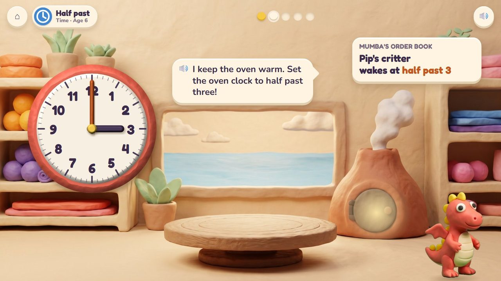
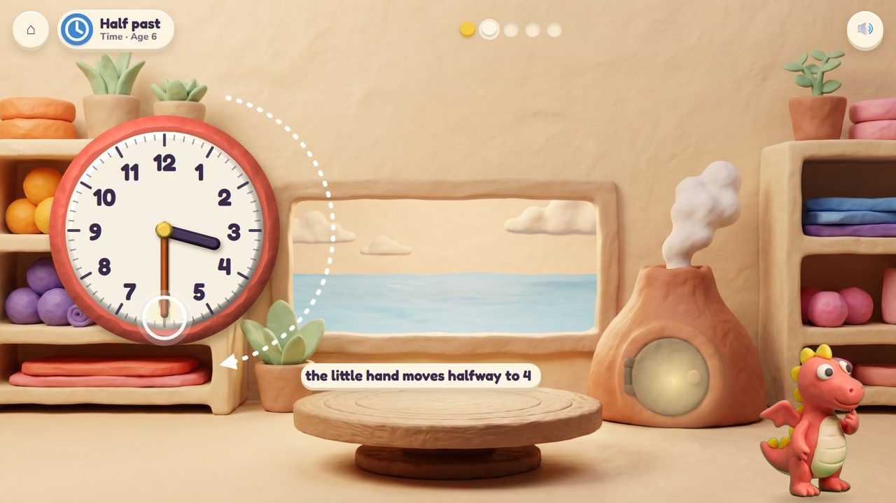
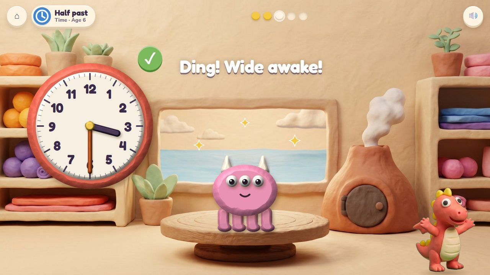
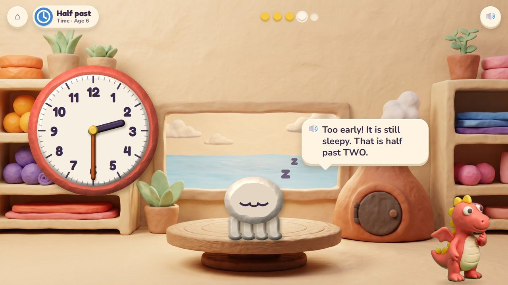
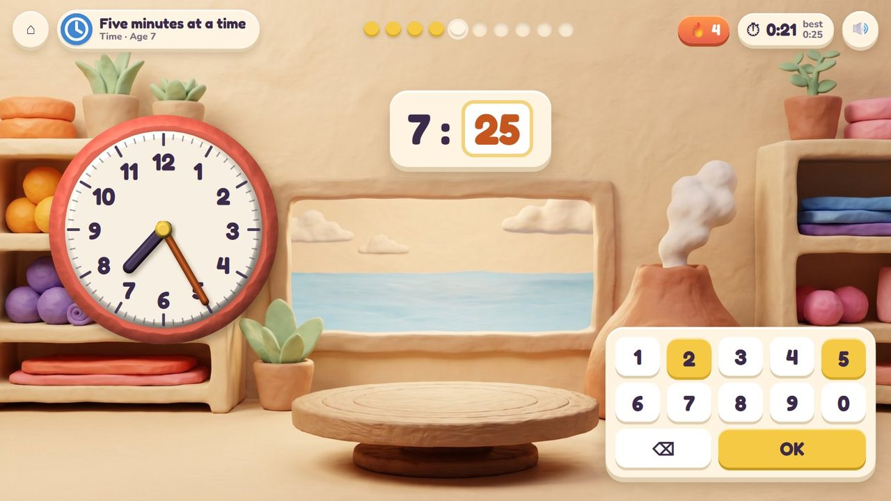
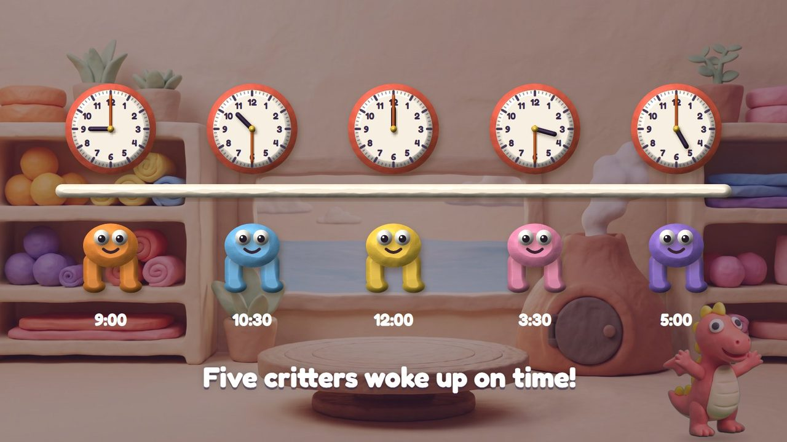
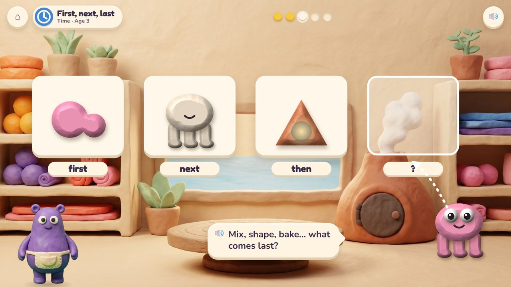
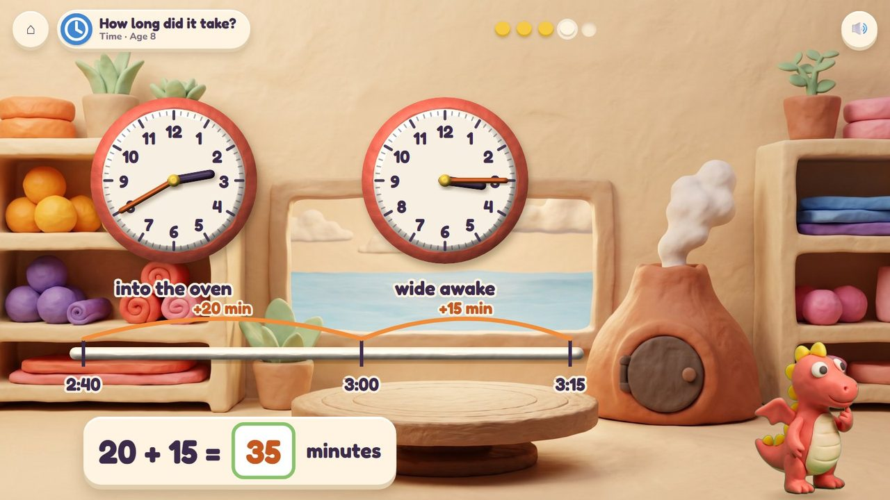
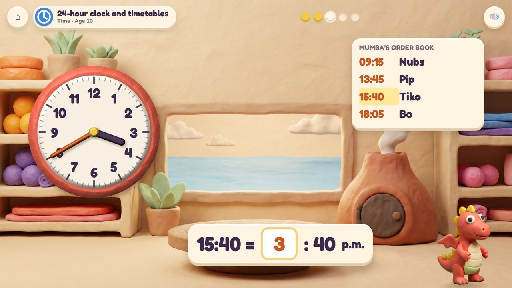

Set the oven clock: the critter wakes up at that time.
21 lessons (19 taught here first, the rest practised here) in 2 topics:
TimeShapes & Space

Fizz keeps the fire of Mumba's volcano oven. A critter is baking, and Mumba's order book says when it must wake up. The child turns the hands of the big clay clock on the workshop wall; the hour hand moves with the minute hand like a real clock. On time, the critter hops out wide awake; too early, it is still pale and sleepy; too late, it is snoring. Little ones put the steps of making a critter in order (mix, shape, bake, wake).
Turn the minute hand (or the hour hand); read the clock and type.
The day's bakes on a time line: every critter woke up on time.
A storyboard of the game in one lesson, drawn from the app's own clay pictures.
The order book: Pip's critter wakes at half past three. The clock says three.
🔊 “I keep the oven warm. Set the oven clock to half past three!”

The minute hand goes round to the 6; the little hand moves halfway to 4.

On time: the critter hops out wide awake.

Half past two: the critter is still pale and sleepy.
🔊 “Too early! It is still sleepy. That is half past TWO.”

Read the clock, type 25. Timed.

The day's bakes on a time line.
🔊 “Five critters woke up on time!”
Read the oven clock and type the time (7 : 25), or how long a critter baked. Ten questions at 6-7, a 60-second round from 8; your time and your best on screen; only right answers count; a miss shows the answer and comes back later. No clock under 6.
The badge at the top left says the topic, the lesson and the age.

Mix, shape, bake… what comes last? Wake it up!

Into the oven at 2:40, awake at 3:15: 20 + 15 = 35 minutes.

Tiko is on the baking list at 15:40: 3:40 in the afternoon.
| Age 3Pre-school | First, next, last: mix the clay, shape it, bake it, wake it; day and night. |
| Age 4Pre-K | Morning, afternoon and night; before and after. |
| Age 5Kindergarten | Days of the week in Mumba's order book; today, yesterday and tomorrow. |
| Age 6Grade 1 | O'clock and half past; days, weeks and months. |
| Age 7Grade 2 | Five minutes at a time; quarter past and quarter to; a.m. and p.m. |
| Age 8Grade 3 | Time to the minute; how long did it bake (a time line). |
| Age 9Grade 4 | Hours, minutes and seconds; time stories; angles as turns of the clock's hands. |
| Age 10Grade 5 | Elapsed time across the day; the 24-hour baking list. |
the hour hand only, then both; 5-minute steps, then every minute
set a wake-up time, read a time, how long, the baking list
the critter shows early or late; after a miss the hands move slowly to the right time
turning the hands; the number pad for the quick round
Age by age they are on the full list; here grouped by topic (the first activity named teaches a lesson, the others practise it).
early yearsOven Clockearly yearsOven Clockearly yearsOven Clockearly yearsOven ClockextraOven ClockextraOven Clock1.MD.3Oven Clock1.MD.3Oven ClockextraOven Clock2.MD.7Oven Clock2.MD.7Oven Clock2.MD.7Oven Clock3.MD.1Oven Clock3.MD.1Oven Clock4.MD.1Oven Clock4.MD.2Oven ClockextraOven ClockextraOven Clock4.G.1Pull-a-Shape · Oven Clock4.MD.5Oven Clock · Pull-a-Shape4.MD.7Pull-a-Shape · Oven Clock